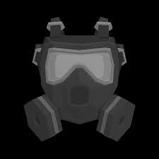

Información rápida
Género: Supervivencia en mundo abierto
Estética: Low-poly, minimalista
Desarrollador: PlaySurrounDead
Diseñador: Zurvivor
Modos de juego: Un jugador
Unidades vendidas: +100,000
Plataforma: PC (Steam)
Acceso anticipado: 24 julio 2022

Descripción
SurrounDead es un juego de supervivencia en un mundo abierto post-apocalíptico con estética low-poly. Los jugadores deben explorar ciudades abandonadas, recolectar recursos, enfrentarse a zombies y sobrevivir lo máximo posible.